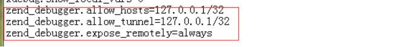

原文连接:https://www.cnblogs.com/dashucoding/p/10788615.html
<?php
$fileName = "php大师.test.php";
//补充程序，显示文件名（不包括扩展名）
$start = strrpos($fileName, ".");
$newStr = substr($fileName,0, $start);
var_dump ( $newStr );
?><?php
for($i=100;$i<1000;$i++){
if(($i*$i)%1000==$i)
{
echo $i;
echo "<br/>";
}
}
?> <?php
$x = "hello";
switch ($x) {
case 1 :
echo "Number 1";
break;
case 2 :
echo "Number 2";
break;
case "hello" :
echo "hello";
break;
default :
echo "No number between 1 and 3";
}
?> <?php
$students = array(array("name"=>"张三","age"=>25,"height"=>180),array("name"=>"李四","age"=>22,"height"=>170));
echo $students[0]["name"];
echo "<br/>";
echo $students[1]["name"];
?> <?php
// 显示右边n个字符
$n = 5;
$oldStr = "dsfasfasf";
$rightStr = subStr ( $oldStr, strlen($oldStr) - $n );
var_dump ( $rightStr );
?><html> <body>
<form action="welcome.php" method="post">
Name: <input type="text" name="name" />
Age: <input type="text" name="age" />
<input type="submit" />
</form>
</body> </html> 好好学习,天天向上
<br/>
<?php
echo "hello world";
define("ABC",1000);
var_dump(defined("ABC"));
echo "<br/>";
echo constant("ABC");
echo PHP_OS;
echo "<br/>";
echo PHP_VERSION;
echo "<br/>";
echo __FILE__;
define('NAME','php');
define('NAME','linux');
echo NAME;
?>
<img src="/test/a.jpg"></img>修改端口号
通过网络命令netstat –aon 找到进程号
php学习

常量一般是大写字母构成，常量只能定义一次
bool define ( string name, mixed value [, bool case_insensitive] )
bool defined ( string name )
<?php
echo "中文测试<br/>";
print "hello world!";
echo "<br/>";
echo "<img src='/test/a.jpg'></img>";
define("PI",3.14);
var_dump(defined("Pi"));
echo PHP_OS;
echo "<br/>";
echo PHP_VERSION;
echo "<br/>";
echo __FILE__;
?>常量、变量的命名规则：
以字母、下划线开头，后接字母、数字、下划线
以$打头命名变量，变量要先赋值后使用
同一个变量，即可以存储数字也可以存储字符串，也就是可以存储任意类型的数据
变量不用指定数据类型，但必须赋值后才能使用
求字符串的长度：int strlen ( string 字符名 )
查找第一次出现的子串位置：int strpos
查找最后一次出现的子串位置：int strrpos
求字符串右边n个字符构成的子串
substr(原串,-$n) 或者：substr(原串,strlen(原串)-$n)
显示去掉扩展名的文件名
$dotpos = strpos($fileName,".");
echo substr($fileName,0, $dotpos);$y = $x++ 相当于｛$y=$x; $x=$x+1;｝
$y = $x-- 相当于｛$y=$x; $x=$x-1;｝
$y = ++$x 相当于｛$x=$x+1; $y=$x;｝
$y = $x-- 相当于｛$x=$x-1; $y=$x;｝对于表达式：A && B，如果A为假，则不再计算表示式B的值
对于表达式：A || B，如果A为真，则不再计算表示式B的值date函数用于将日期格式化为指定格式
构造数组：$names = array("a","b","c");
访问数组元素：$names[0]、 $names[1]、 $names[2].函数explode,用于将字符串分割成多个子串构成的数组
关联数组
方法： “键”＝>值
数据类型
Boolean型
integer型
浮点型
字符串型
伪类型
mixed、number、void、callback
<?php
// 求1!+2!....+10!
// 声明一个控制变量，初始化
$i = 1;
// 声明一个存储和的变量
$sum = 0;
// 声明一个变量存储n!,初始化化为1;
$rank = 1;
// 计算$i的阶乘，计算完马上累加科
while ( $i <= 10 ) {
// 计算$i！= ($i-1)!*$i
$rank *= $i;
// 累加
$sum += $rank;
// 改变循环变量值
$i ++;
}
echo $sum . "<br/>";
// 求1!+2!....+10!
$x = 1;
$sum2 = 0;
while ( $x <= 10 ) {
// 计算$x!
$rank2 = 1;
$y = 1;
while ( $y <= $x ) {
$rank2 *= $y;
$y ++;
}
// 累加
$sum2 += $rank2;
// 改变循环变量值
$x ++;
}
echo $sum2 . "<br/>";
// 求1.....100之间素数
// 8 = 2*4 7是素数，因为7/2 7/3 7/4....7/6，7不能被整除
for($i = 2; $i <= 100; $i ++) {
// 假设是素数
$isPrime = true;
//除数不用到$i-1,到sqrt($i)
for($j = 2; $j <= sqrt($i); $j ++) {
if ($i % $j == 0) {
$isPrime = false;
break;
}
}
//验证假设有没有被修改
if ($isPrime == true) {
echo $i . " ";
}
}
$arr=array("one", "two", "three");
//依次取出数组每一个元素放到$aa
foreach ($arr as $aa){
echo $aa. " ";
}
echo "<br/>";
// 求1!+2!....+10!
function Rank($n){
$rank = 1;
for($i=1;$i<=$n;$i++){
$rank *= $i;
}
return $rank;
}
$sum = 0;
for($i=1;$i<=10;$i++){
$sum += Rank($i);
}
echo $sum;
?>
检入
自定义函数模板
开发环境：wamp3.06 + Zend studio 12
调试配置
打开php配置文件php.ini
去掉xdebug前的所有注释符号‘;’，也就是说使用wamp自带的调试器

允许访问服务器
修改httpd.conf，允许访问服务器
zend Studio 中设置
Servers
配置local Apache HTTP Server
配置exe文件
配置debug
修改Document Root为
配置默认字符集

配置默认字体大小
<!DOCTYPE html PUBLIC "-//W3C//DTD XHTML 1.0 Transitional//EN" "http://www.w3.org/TR/xhtml1/DTD/xhtml1-transitional.dtd">
<html xmlns="http://www.w3.org/1999/xhtml">
<head>
<meta http-equiv="Content-Type" content="text/html; charset=utf-8" />
<title>无标题文档</title>
</head>
<body>
<?php
// if((($_FILES["file"]["type"] == "image/gif") || ($_FILES["file"]["type"] ==
// "image/jpeg") || ($_FILES["file"]["type"] == "image/pjpeg")) &&
// ($_FILES["file"]["size"] < 20000)) {
// if ($_FILES["file"]["error"] > 0) {
// echo "Return Code: " . $_FILES["file"]["error"] . "<br />";
// }
// else {
if (file_exists ( "upload/" . $_FILES ["file"] ["name"] )) {
echo $_FILES ["file"] ["name"] . " already exists. ";
} else {
$newname = iconv ( "utf-8", "gb2312", $_FILES ["file"] ["name"] );
move_uploaded_file ( $_FILES ["file"] ["tmp_name"], "upload/" . $newname );
// move_uploaded_file($_FILES["file"]["tmp_name"], "upload/"
// .$_FILES["file"]["name"]);
echo "Stored in: " . "upload/" . $_FILES ["file"] ["name"];
}
// }
// } else { echo "Invalid file"; }
?>
</body>
</html><html>
<body>
<?php
$week = array("星期日","星期一","星期二","星期三","星期四","星期五","星期六");
$day = date("w");
$mydate = date("你好！ 现在是Y年n月j日H点i分,$week[$day]");
echo $mydate;
?>
</body>
</html><?php
session_start();
if(isset($_SESSION['user'])){
header("Location:main.php");//自动跳转到main.php
}else{
//获取用户输入
$username = $_POST [ 'username' ];
$passcode = $_POST [ 'passcode' ];
$cookie = $_POST [ 'cookie' ];
//判断用户是否存在，密码是否正确
if ($username =="hhh" && $passcode == "12345")
{
$_SESSION['user']=$username;
header("Location:main.php" );//自动跳转到main.php
}
else{
echo "用户名或密码错误";
}
}
?><?php header('Content-type:text/html;charset=utf-8'); ?>
<html>
<head>
<meta http-equiv= "Content-Type" content=" text/html; charset=UTF-8">
</head>
<body>
<?php
if (isset ( $_COOKIE ["username"] )) {
header ( "location: main1.php" );
} else {
$username = $_POST ['username'];
$passcode = $_POST ['passcode'];
$cookie = $_POST ['cookie'];
if ($username == "hhh" && $passcode == "12345") {
switch ($cookie)
{
case 0 :
setcookie ( "username", $username );
break;
case 1 :
setcookie ( "username", $username, time () + 24 * 60 * 60 );
break;
case 2 :
setcookie ( "username", $username, time () + 30 * 24 * 60 * 60 );
break;
case 3 :
setcookie ( "username", $username, time () + 365 * 24 * 60 * 60 );
break;
}
header ( "location: main.php" );
} else {
echo "";
}
}
?>
</body>
</html>发送邮箱
<!DOCTYPE html PUBLIC "-//W3C//DTD XHTML 1.0 Transitional//EN" "http://www.w3.org/TR/xhtml1/DTD/xhtml1-transitional.dtd">
<html xmlns="http://www.w3.org/1999/xhtml">
<head>
<meta http-equiv="Content-Type" content="text/html; charset=utf-8" />
<title>无标题文档</title>
</head>
<body>
<html>
<body>
<?php
if (isset($_REQUEST['emailto']))
{
$emailto = $_REQUEST['emailto'];
$subject = $_REQUEST['subject'];
$message = $_REQUEST['message'];
if(mail($emailto,$subject,$message,"From:23232323@hzj.com")){
echo "谢谢使用本程序！";
}else{
echo "未能发送成功！";
}
}else{
echo "<form method='post' action='sendemail.php'>EmailTo:<input name='emailto' type='text' /><br />Subject: <input name='subject' type='text' /><br />Message:<br /><textarea name='message' rows='15' cols='40'></textarea><br /><input type='submit' /></form>";
}
?>
</body>
</html>PHP Date() 函数可把时间戳格式化为可读性更好的日期和时间
语法
date(format,timestamp)d - 月中的天 (01-31)
m - 当前月，以数字计 (01-12)
Y - 当前的年（四位数） <?php
echo date("Y/m/d");
echo "<br />";
echo date("Y.m.d");
echo "<br />";
echo date("Y-m-d");
?>PHP 引用文件
include() 或 require()
它们处理错误的方式不同
include() 函数会生成一个警告
require() 函数会生成一个致命错误
PHP 文件处理
fopen ( string $filename , string $mode )关闭文件
fclose() 函数用于关闭打开的文件逐行读取文件
fgets() 函数用于从文件中逐行读取文件PHP 文件上传
<html> <body>
<form action="upload_file.php" method="post" enctype="multipart/form-data">
<label for="file">Filename:</label>
<input type="file" name="file" id="file" /> <br />
<input type="submit" name="submit" value="Submit" />
</form>
</body> </html>